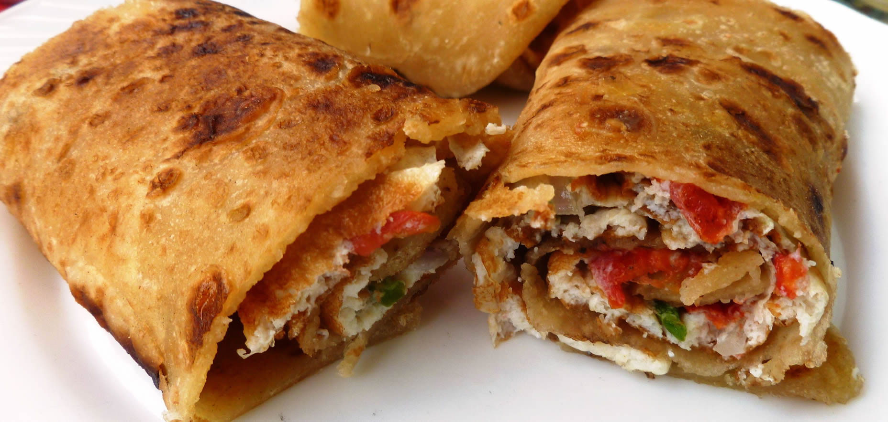

Rolex

Description
Rolex is a popular Ugandan street food made of a chapati rolled with a fried egg and fresh vegetables. It is quick, delicious and filling.
The name "Rolex" comes from "Rolled Eggs" — a favorite snack enjoyed across Uganda.
Ingredients
- 2 chapatis
- 2 eggs
- 1 tomato sliced
- 1 onion sliced
- 1 green pepper sliced
- Salt to taste
- Cooking oil
Steps
- Beat eggs in a bowl and add salt.
- Add sliced tomatoes, onions and green pepper to the egg mixture.
- Heat oil in a pan over medium heat.
- Pour egg mixture into pan and fry until cooked.
- Place chapati on top of the egg while still in pan.
- Flip and cook for 1 minute.
- Remove from pan and roll the chapati with egg inside.
- Serve hot and enjoy!
Home